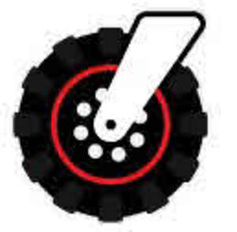
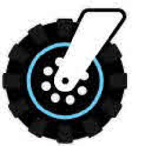

Trade Mark Journal No.2025/033 15 August 2025
UK00004159542 12 February 2025 (12,18,22,28,35)
Mark 1

Mark 2

- Class 12
- Wheel barrows; wheel barrows for the transport of fishing tackle; tackle barrows; fishing trolleys; powered barrows; powered tackle barrows; waggons; Sack trolleys; trolleys for the transport of fishing tackle; trolleys; powered trolleys; Garden tractors for transport; luggage trucks; Wheeled luggage carriers; Motorised luggage carts; non-motorised luggage carts; fitted vehicle covers; wheel barrows for angling use.
- Class 18
- Articles of Luggage, bags, wallets and other carriers; Luggage; Luggage bags; Wheeled luggage; Straps for luggage; leather straps; Baggage; Wheeled suitcases; Travelling bags; Duffel bags.
- Class 22
- Vehicle covers, not fitted; Webbing straps (Non-metallic -) for handling loads; Ropes and synthetic ropes; Bungee cords.
- Class 28
- Fishing equipment; Fishing reels; Fishing leaders; Fishing plumbs; Fishing sinkers; Fishing lures; Fishing creels; Fishing floats; Fishing swivels; Fishing weights; Fishing poles; Fishing rods; Fishing hooks; Fishing gaffs; Fishing plugs; Fishing harnesses; Fishing spinners; Fishing tippets; Fishing lines; Fishing tackle; Paternosters [fishing tackle]; Fishing bait [synthetic]; Lures for fishing; Fishing tackle boxes; Fishing ground baits; Lines for fishing; Handheld fishing nets; Rod blanks (Fishing -); Bags for fishing; Fishing rod cases; Swivels; Fishing rod handles; Fishing lure boxes; Fishing fly boxes; Fishing reel cases; Fishing rod holders; Fishing tackle bags; Fishing line casts; Fishing rod supports; Fishing rod rests; Gut for fishing; Ice fishing strike indicator; Artificial chum for fishing; Landing nets for fishing; Bags adapted for fishing; Hunting and fishing equipment; Inflatable fishing float tubes; Bite sensors [fishing tackle]; Spears for use in fishing; Line casts for fly-fishing; Decoys for hunting or fishing; Fish hook removers being fishing tackle; Audible indicating apparatus for use in fishing; Angling nets; Floats for angling; Angling bank stick supports; Artificial flies for use in angling; Bags for fishing tackle; tackle boxes.
- Class 35
- Retail of services relating to wheel barrows, wheel barrows for the transport of fishing tackle, tackle barrows, fishing trolleys, powered barrows, powered tackle barrows, waggons, Sack trolleys, trolleys for the transport of fishing tackle, trolleys, powered trolleys, Garden tractors for transport, luggage trucks, Wheeled luggage carriers, Motorised luggage carts, non-motorised luggage carts, fitted vehicle covers, Articles of Luggage, bags, wallets and other carriers, Luggage, Luggage bags, Wheeled luggage, Straps for luggage, leather straps, Baggage, Wheeled suitcases, Travelling bags, Duffel bags, Bags for fishing tackle, tackle boxes, Vehicle covers, not fitted, Webbing straps (Non-metallic -) for handling loads, Ropes and synthetic ropes, Bungee cords, Fishing equipment, Fishing reels, Fishing leaders, Fishing plumbs, Fishing sinkers, Fishing lures, Fishing creels, Fishing floats, Fishing swivels, Fishing weights, Fishing poles, Fishing rods, Fishing hooks, Fishing gaffs, Fishing plugs, Fishing harnesses, Fishing spinners, Fishing tippets, Fishing lines, Fishing tackle, Paternosters [fishing tackle], Fishing bait [synthetic], Lures for fishing, Fishing tackle boxes, Fishing ground baits, Lines for fishing, Handheld fishing nets, Rod blanks (Fishing -), Bags for fishing, Fishing rod cases, Swivels, Fishing rod handles, Fishing lure boxes, Fishing fly boxes, Fishing reel cases, Fishing rod holders, Fishing tackle bags, Fishing line casts, Fishing rod supports, Fishing rod rests, Gut for fishing, Ice fishing strike indicator, Artificial chum for fishing, Landing nets for fishing, Bags adapted for fishing, Hunting and fishing equipment, Inflatable fishing float tubes, Bite sensors [fishing tackle], Spears for use in fishing, Line casts for fly- fishing, Decoys for hunting or fishing, Fish hook removers being fishing tackle, Audible indicating apparatus for use in fishing, Angling nets, Floats for angling, Angling bank stick supports, Artificial flies for use in angling, wheel barrows for angling use.
Korda Developments Ltd
Representative: Knights Professional Services Limited